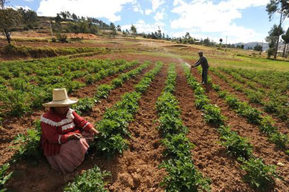
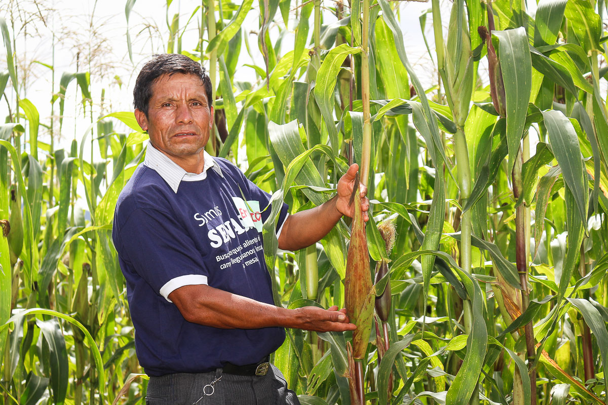
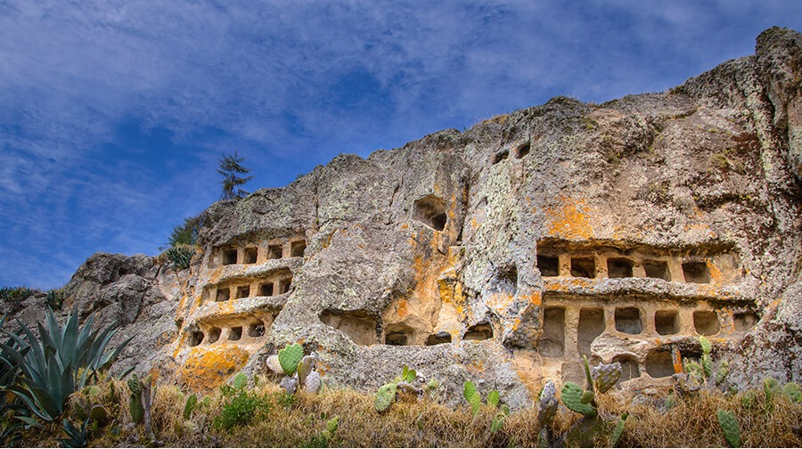
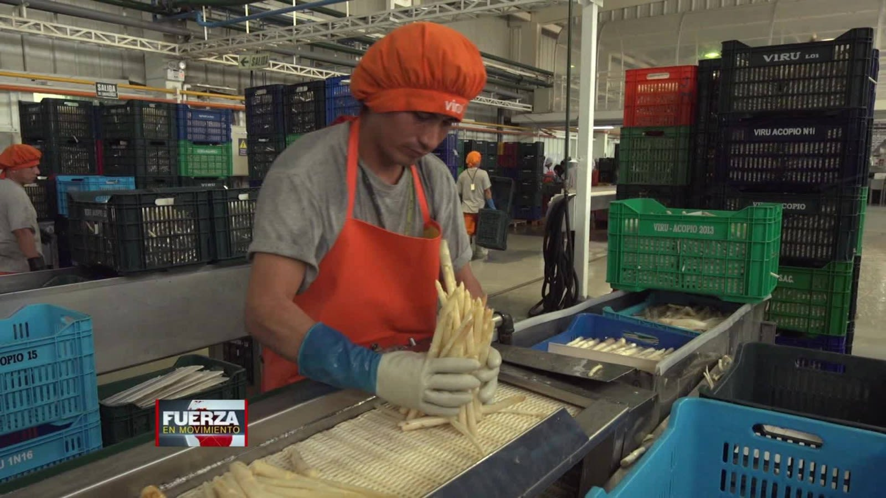

Actividades economicas:
La agricultura es uno de los pilares fundamentales de su economía, destacándose por la producción de papas, maíz, trigo, cebada y productos lácteos. Además, la ganadería, especialmente la crianza de vacunos y ovinos, complementa este sector agrícola robusto. La minería también juega un papel significativo en Cajamarca, siendo conocida por sus importantes yacimientos de oro y otros minerales, lo cual ha generado tanto oportunidades económicas como tensiones sociales en torno a proyectos mineros. El turismo es otra actividad en crecimiento, atraído por la rica historia precolombina y colonial de la región, así como por sus paisajes naturales impresionantes como los baños del Inca y la Laguna de San Nicolás. La industria en Cajamarca, aunque menos desarrollada que otros sectores, incluye la manufactura de productos alimenticios, textiles y artesanías, siendo un componente clave en la economía local. En resumen, la economía de Cajamarca se sustenta en una combinación dinámica de agricultura, minería, turismo e industria, cada uno contribuyendo de manera única al desarrollo y la identidad económica de esta región peruana.
 |
Factores de prduccion:
Tierra: Cajamarca cuenta con una abundante disponibilidad de tierras agrícolas que favorecen la producción de cultivos tradicionales como papas, maíz, trigo y cebada. La fertilidad de su suelo y su variedad climática permiten una agricultura diversificada, apoyada también por la ganadería, especialmente la cría de vacunos y ovinos en las zonas altas.
Trabajo: La mano de obra en Cajamarca se distribuye principalmente entre el sector agrícola, el comercio y los servicios. La población rural se dedica principalmente a actividades agrícolas y ganaderas, mientras que en las ciudades como Cajamarca capital y otras poblaciones urbanas, se concentran actividades comerciales y de servicios como educación, salud y administración.
Capital: La minería es un sector importante en Cajamarca, especialmente la extracción de oro y otros minerales. Esto ha generado la necesidad de inversiones significativas en infraestructura minera, como maquinaria pesada, equipos de extracción y procesamiento, así como infraestructuras asociadas como carreteras y sistemas de transporte.
Capacidad empresarial: En Cajamarca, la capacidad empresarial se observa en diversos niveles, desde pequeños empresarios en el comercio local hasta grandes compañías mineras que operan en la región. La gestión eficiente de los recursos naturales, el capital humano y físico es crucial para el desarrollo económico sostenible y equitativo en la región.
Además de estos factores tradicionales, el turismo está emergiendo como un sector en crecimiento en Cajamarca, aprovechando su rica historia cultural y natural, lo que también implica inversiones en infraestructura turística y la gestión sostenible de los recursos naturales.
 |
Lugares turisticos
Complejo Arqueológico de Cumbemayo: Situado a unos 20 kilómetros al suroeste de Cajamarca, este complejo arqueológico es famoso por sus formaciones rocosas talladas de forma intrigante, canales de agua preincaicos y pinturas rupestres. Es un sitio importante para entender la cultura preincaica en la región.
Baños del Inca: A solo unos pocos kilómetros de Cajamarca, estos baños termales naturales son conocidos por sus aguas sulfurosas que se cree tienen propiedades terapéuticas. Según la historia, el emperador inca Atahualpa solía bañarse aquí, lo que ha dado nombre al lugar.
Plaza de Armas de Cajamarca: El corazón de la ciudad, esta plaza histórica alberga la Catedral de Cajamarca, construida en el siglo XVII, y otros edificios coloniales. Es un lugar ideal para pasear y disfrutar de la arquitectura colonial mientras se observa la vida local.
Ventanillas de Otuzco: A unos 8 kilómetros al noreste de Cajamarca, estas son tumbas preincaicas talladas en roca que datan de aproximadamente 1,000 años atrás. Se encuentran en un acantilado y ofrecen una vista impresionante de la campiña cajamarquina.
Complejo Arqueológico de Kuntur Wasi: Ubicado en la provincia de Cutervo, al sureste de Cajamarca, este complejo arqueológico es famoso por sus impresionantes esculturas de aves y otros artefactos que revelan la cultura Chavín, que se remonta a más de 3,000 años.
Laguna San Nicolás: A unos 12 kilómetros al sur de Cajamarca, esta laguna de aguas tranquilas y cristalinas es un lugar perfecto para los amantes de la naturaleza y la fotografía. Rodeada de montañas y vegetación, ofrece un ambiente sereno para relajarse.
Iglesia de Santa Apolonia: Esta iglesia colonial, ubicada en el distrito de Jesús, cerca de Cajamarca, es conocida por su singular arquitectura barroca y su rica historia. Es un ejemplo destacado de la influencia española en la región.
Mirador de Bellavista: Desde este mirador, ubicado en el cerro Santa Apolonia, se puede disfrutar de una vista panorámica impresionante de la ciudad de Cajamarca y sus alrededores. Es especialmente popular al atardecer, cuando se puede apreciar la ciudad iluminada.
 |
Gobierno regional
El Gobierno Regional de Cajamarca es la entidad encargada de la administración y gestión de los asuntos públicos en la región de Cajamarca, Perú. Su sede se encuentra en la ciudad de Cajamarca y su función principal es promover el desarrollo integral y sostenible de la región, asegurando el bienestar de sus habitantes y la adecuada utilización de los recursos disponibles.
El gobierno regional de Cajamarca está liderado por un presidente regional, quien es elegido democráticamente cada cuatro años. Este cargo es clave en la toma de decisiones sobre políticas públicas, inversiones en infraestructura, desarrollo económico, social y cultural, así como la gestión ambiental y la promoción del turismo.
Entre las principales funciones del Gobierno Regional de Cajamarca se encuentran la formulación y ejecución de planes y programas que buscan mejorar la calidad de vida de los cajamarquinos, impulsar la inversión pública y privada, y fortalecer la participación ciudadana en la gestión pública. Además, administra los recursos financieros asignados por el gobierno central y los ingresos propios generados por la región, garantizando una gestión transparente y eficiente.
El gobierno regional también juega un papel fundamental en la coordinación con los gobiernos locales de Cajamarca, así como con instituciones públicas y privadas, organizaciones sociales y la comunidad en general, para alcanzar objetivos comunes de desarrollo y progreso. Asimismo, trabaja en la promoción de la cultura, el deporte y la preservación del patrimonio histórico y natural de la región, contribuyendo así a fortalecer la identidad cajamarquina y fomentar el orgullo por sus raíces.
En resumen, el Gobierno Regional de Cajamarca desempeña un rol crucial en la gobernanza local, trabajando día a día por el desarrollo integral y sostenible de la región, en línea con las necesidades y aspiraciones de sus habitantes.
/Gobiernoregional.jpg) |
Rol de agentes economicos para garamtizar el desarrollo del mercado y comercio regional
Empresas y emprendedores: Son actores clave que generan empleo, producción y valor agregado en la economía regional. Las empresas locales, desde pequeños negocios hasta grandes corporaciones, contribuyen al dinamismo económico al ofrecer productos y servicios, innovar en procesos y generar ingresos que circulan en la economía local.
Consumidores: Los consumidores juegan un papel vital al demandar bienes y servicios, lo que impulsa la actividad económica y orienta las decisiones de producción y oferta. Su comportamiento de compra y preferencias influye en el desarrollo de nuevos mercados y en la adaptación de productos a las necesidades locales.
Gobierno regional y local: El Gobierno Regional de Cajamarca y los gobiernos locales tienen la responsabilidad de crear un entorno propicio para el desarrollo económico. Esto incluye la formulación de políticas públicas que fomenten la inversión, el emprendimiento y la competitividad, así como la creación y mantenimiento de infraestructuras necesarias para facilitar el comercio y la conectividad.
Instituciones financieras: Los bancos y otras instituciones financieras proveen capital a las empresas y emprendedores, permitiéndoles invertir en expansión, innovación y desarrollo de nuevos productos. Su papel es crucial para facilitar el acceso al crédito y otros servicios financieros que promuevan el crecimiento empresarial y el comercio regional.
Organizaciones empresariales y comerciales: Cámaras de comercio, asociaciones empresariales y otras organizaciones juegan un rol facilitador al representar los intereses del sector privado, promover la colaboración entre empresas, y ofrecer servicios de apoyo como capacitación, asesoría y networking que fortalecen el tejido empresarial local.
Educación y capacitación: Instituciones educativas, centros de formación técnica y universidades desempeñan un papel crucial al proporcionar la capacitación necesaria para el desarrollo de habilidades técnicas y gerenciales que impulsan la productividad y la competitividad de los agentes económicos locales.
Sector informal y microempresas: Aunque a menudo subestimado, el sector informal y las microempresas contribuyen significativamente al empleo y al comercio local. Su inclusión en políticas de desarrollo económico y acceso a oportunidades de capacitación y financiamiento puede fortalecer aún más su contribución al mercado regional.
/Rol.jpg) |
Empresas de la zona
Minería:
Yanacocha (Newmont Corporation)
Cerro Corona (Gold Fields)
Agricultura y Agroindustria:
Cooperativa Agraria Norandino
Comercio y Servicios:
Supermercados Peruanos (Tiendas Mass)
Hotel Costa del Sol Cajamarca
Construcción e Ingeniería:
Contratistas Generales Cajamarca
T
urismo:
Agencia de Viajes Salkantay Expediciones
 |